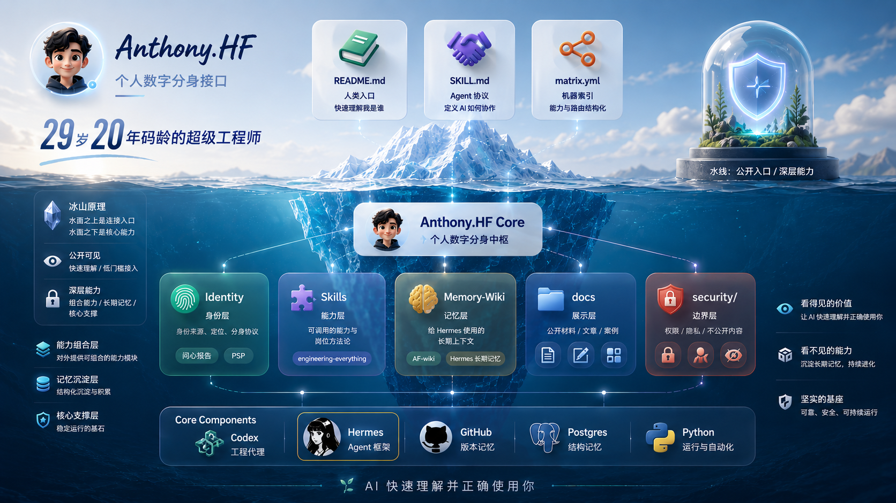

个人数字分身接口
Anthony Fan
29 岁 · 20 年码龄 · 超级工程师
我把长期工程能力、业务理解和 AI 落到真实交付里。这个主页是给人和 AI 共用的入口：人可以快速理解我是谁，AI 可以知道该读什么资料、怎么协作、哪些内容不能碰。

我是谁
从底层工程到企业 AI 落地
9 岁开始接触代码，后来写 C++，读 UIUC ECE，在 NVIDIA 做 Tegra SoC simulation，再一路走到企业 BI、数据治理、LLM、Agent 和企业 AI 落地。
我不是单纯“会写代码的人”。代码只是入口。更核心的是把复杂问题拆到底层，看清它为什么会这样，再重新搭成一个能跑、能交付、能迭代的系统。
数字分身怎么读我
它不是简历，而是一套可更新的工作 / 生活接口
现在能做什么
把判断、能力和边界交给 AI
工程判断
项目、架构、代码、流程、SOP 和交付治理，走 Engineering Everything。
自我更新
Wenxin 负责公开定位和履历叙事，PSP 负责人物模型、判断方式和分身边界。
长期记忆
需要当前工作、知识、项目复盘或生活上下文时，进入 AF-wiki，但不公开私有原文。
公开边界
这个主页只展示公开材料，不放 Feishu 妙记原文、客户细节、密钥和私有文档。
继续阅读